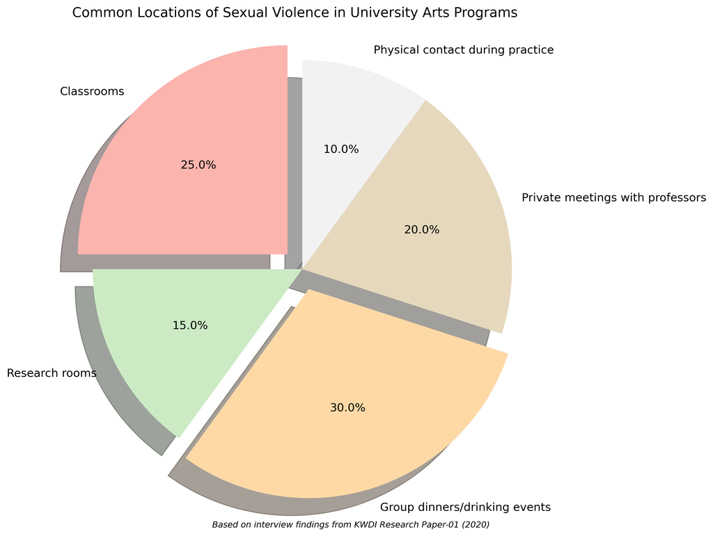
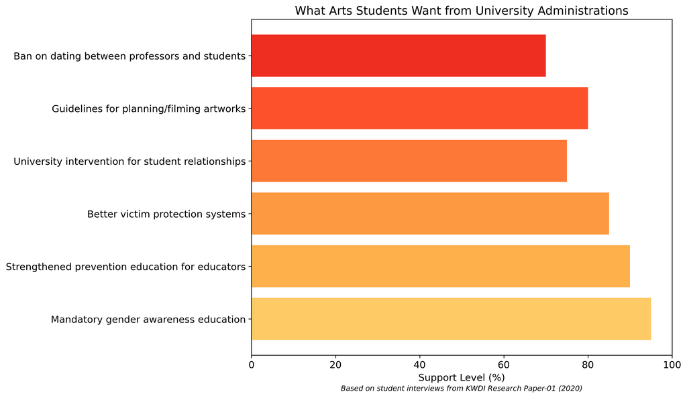

미투 이후 예술 교육에서의 성적 폭력: 현황과 정책 과제
2025년 1월 30일
서론
2018년 한국의 미투 운동은 예술 교육에서 충격적인 수준의 성적 폭력을 드러냈습니다. 한국여성정책연구원의 이 포괄적인 연구는 음악원과 예술 학교에서의 성적 폭력의 독특한 특성을 조사하여, 도제식 모델과 위계적 구조가 어떻게 학대가 번성하는 환경을 만드는지 보여줍니다.

주요 발견사항
발생률 및 특성
이 연구는 예술 및 스포츠 학과가 다른 대학 학과에 비해 성적 폭력 발생률이 현저히 높다는 것을 밝혀냈습니다. 문화 및 예술 분야에서 권력 역학은 특히 취약한 상황을 만듭니다:
- 대부분의 예술 학과에서 여학생이 다수임에도 불구하고 남성 교수들이 불균형적인 권력을 보유
- "예술가-멘토" 관계는 일반적인 교육 경계를 넘어섬
- 교수들은 학생들의 미래 경력을 위한 중요한 산업 문지기 역할을 함
- "예술적 표현"은 종종 부적절한 성적 행동을 정당화하는 데 사용됨
고위험 환경
예술 교육 내에서 성적 폭력은 여러 환경에서 발생합니다:
- 교실(부적절한 예시나 시연을 통해)
- 연구실 및 연습실
- 의무적인 사교 모임 및 음주 행사
- 교수나 방문 예술가와의 개인 미팅
연습 세션 중의 신체 접촉은 명확한 경계나 동의 지침 없이 특히 모호한 상황을 만들어냅니다.
구조적 요인
이 연구는 학대가 계속되도록 하는 여러 제도적 실패를 확인했습니다:
- 대학은 피해자를 위한 적절한 지원 시스템이 부족함
- 고충상담기구는 조직적 지위가 낮고 자원이 불충분함
- 예방 교육이 일관되지 않고 종종 효과적이지 않음
- 가해자에 대한 징계 조치는 종종 관대하거나 제대로 시행되지 않음
- 피해자는 조사 과정 중 2차 트라우마를 경험함
학생 대응 및 활동
미투 운동은 학생들이 다양한 채널을 통해 목소리를 낼 수 있도록 힘을 실어주었습니다:
- 소셜 미디어 공개 및 익명 온라인 커뮤니티
- 대학 공간에 손으로 쓴 포스터
- 학생회 비상대책위원회
- 제도적 책임에 대한 요구
학생들은 사건 보고서를 수집하고, 대학의 조치를 요구하며, 징계 과정에서 피해자를 대표하고, 지원 자원을 제공하기 위해 조직했습니다. 그러나 그들은 종종 기관과 교수진의 저항에 부딪혔습니다.
변화를 위한 권고사항
이 연구는 포괄적인 정책 개선을 제안합니다:
- 부처의 책임: 교육부는 감독을 강화하고, 관련 법을 수정하며, 대학 평가에 성적 폭력 예방을 통합해야 함
- 고충 처리: 고충처리기구를 위한 더 강력한 법적 기반을 확립하고, 훈련된 인력으로 적절한 직원 배치를 보장하며, 기밀 보호를 개선
- 음악원 특정 정책: 부처 간 협력 증가, 기관 간 가해자 정보 공유, 성인지 교육과정 확대
- 규제 개선: 가해자가 결과를 피하기 위해 사임하는 것을 제한하고, 피해자 통지 절차를 개선하며, 예방 교육의 효과성 향상
결론
예술 분야에서 안전한 교육 환경을 만들기 위해서는 학대를 가능하게 하는 독특한 권력 역학과 문화적 요소를 해결해야 합니다. 이 연구는 문제의 규모를 보여주며 제도적, 정책적 변화를 위한 로드맵을 제공합니다.
출처:
- 차트 다운로드 (.png) - 보고서에 사용된 모든 차트 파일 포함
- 전체 보고서 다운로드 (PDF) - 전체 연구 보고서의 PDF 버전
- 원본 연구: "미투 운동 이후 대학 문화예술계 성폭력 실태와 정책과제" (2020) 이미정, 윤덕경, 전해상, 정수연, 이성미, 한국여성정책연구원